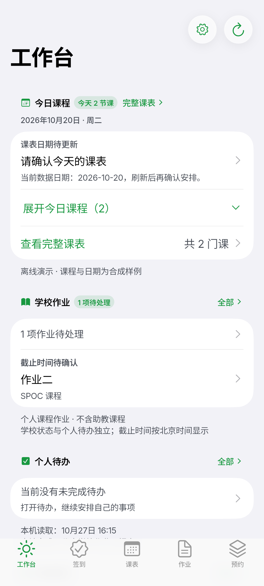

今天要上的课与待处理事项
同屏汇总当日课程、近期截止作业、校园通知与本机个人待办；课程签到支持在课前生成实时签到二维码并保存到相册。
今日工作台实时签到码本机待办
从早八课表、课堂实时签到码、SPOC 作业截止，到图书馆座位、研讨室与校园账户余量——打开 Ginkgo，眼前要忙的事一目了然。
非官方个人开源项目。公开试用中，重要学业与预约记录请以学校官方系统为准。

各功能使用独立接口，只在打开对应页面时请求学校服务，单个系统维护不影响其它页面。
以下截图均来自隔离模拟器的离线演示模式，使用合成样例数据，不包含任何真实账号或个人课程信息。
所有学校请求均在应用进程内由本地 Rust 模块直连北航系统，或经北航官方 WebVPN 访问，账号密码与 Cookie 不经过第三方服务器。
支持 Android 7.0 及以上的 64 位 ARM 设备，安装包内置应用更新校验能力。
从本页或 GitHub Release 获取安装包；使用第三方镜像加速下载后请核对官方 SHA-256 摘要。
按 Android 系统引导允许本次安装。升级新版可直接覆盖安装以保留本机个人待办。
登录本人北航统一身份认证即可使用；校园网内外可按需切换直连或官方 WebVPN，也可先体验离线演示。
覆盖升级前建议备份重要个人待办；不建议降级安装。若曾安装本地 Debug 调试包，因签名不同需先卸载旧调试包。
仓库区分“合成测试通过”与“真实账号实机验收”，尚未完成全场景真机核对的能力均在文档中如实标注。
校园卡、网费与财务模块仅做只读查询，不接入充值、挂失、转账或应用内评教提交写操作。
各功能通过独立接口通信；单一上游系统维护或会话过期时，不会清空全局登录态或影响课表与本机待办。
遇到适配问题请附上版本号、机型、本科/研究生类别与直连/WebVPN 路线，请勿上传密码、Cookie 或未打码截图。
提交试用反馈不是。Ginkgo 是非官方个人开源项目，与北京航空航天大学及其任何部门无隶属、合作或授权关系。重要信息请以学校官方系统为准。
可以。支持自动、直连与北航官方 WebVPN 路线切换；校外环境可通过本人北航统一身份认证经官方 WebVPN 访问支持的校内服务。
这些模块均为用户手动触发的纯只读请求，金额默认遮挡且剥离证件号与银行卡号，数据仅存于当前页面内存，切后台或离页即刻销毁，不写入本地磁盘。
为尊重教学评价严肃性并规避上游网页端状态锁死风险，应用仅提供应评课程与未评数量提醒，并提供官方评教系统入口在浏览器中由本人完成。
0.1.0-alpha.6 · x64。与 Android 共用底层工程保持可编译，历史安装包未签名。
下载安装器 ↗便携 ZIPv0.1.0-alpha.7。保留原生 SwiftUI 源码与归档包，不再排期开发。
下载历史 DMG ↗不提供公开分发包，保留原生源码供自行编译学习。
查看构建说明 ↗感谢以下开源项目及其作者与贡献者：BUAASubnet/UBAA、fontlos/buaa-api、CoolwindHF/Auto-BUAA-icw。
Ginkgo 仅供个人学习与自用。使用者应遵守学校服务条款与网络管理规定，不用于绕过风控或替代官方渠道。软件依 MIT 许可按“原样”提供，请自行核对重要信息。